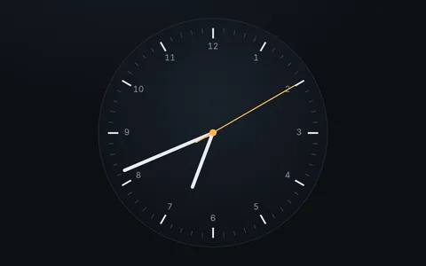
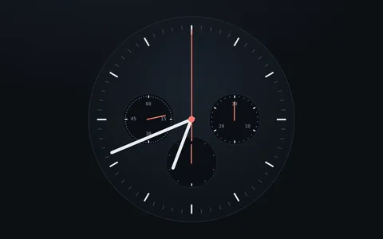
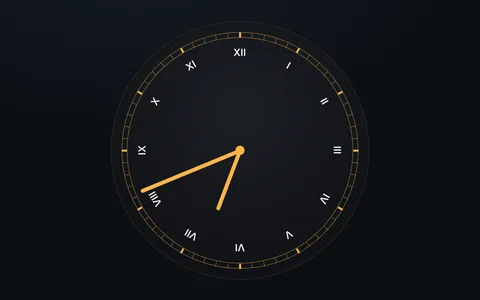
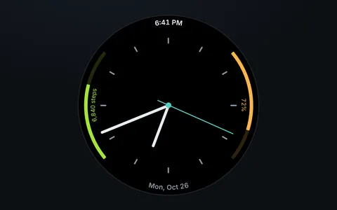
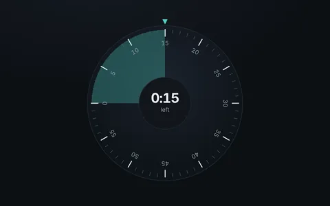

Watches and clocks
A watch face is many things around one center: a bezel, sixty ticks, twelve numbers, hands and sometimes whole sub-dials. In Orbit the ticks are vectors, the numbers are satellites, each hand is a vector on a ring that turns, and a sub-dial is a satellite with its own system. All of them tell the real time.

Minimalist analog clockTicks, numbers and three hands, on the real time.
ChronographThree sub-dials, each its own system, and a working stopwatch.
Roman numeral clockNumerals along the radius, with spin-lock and flip.
Smartwatch faceTime and date as curved text along the bezel.
Circular timerTurn the wheel to set it; three rings share one angle.